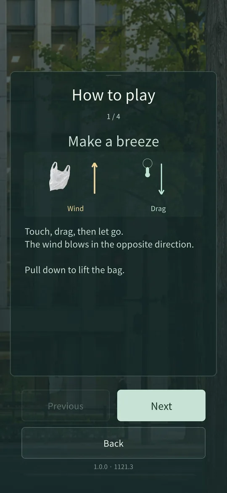

ADRIFT
遊び方・サポート
空の袋を街から渓流まで運びます。まずは画面を下に引いて、放してみましょう。
Read in English風を起こす
-
下に引いて、放す
ゲーム画面の中で指を下に引いて離すと、逆向きに風が吹き、袋が上がります。
-
長さと向きで調整する
斜めに引くと、風は反対の斜め方向へ。引く距離を長くすると、一定の強さに達するまで風が強くなります。短すぎる操作は風を起こしません。
-
追い風と逆風に合わせる
追い風で前進が速くなり、逆風で遅くなります。画面上の風表示と流れる粒を目安に、車や上空の障害物をかわしましょう。


休憩・保存・再開
各ステージの途中にある休憩地点では、到着した高さ付近に袋が止まります。準備ができたら「飛行を再開」をタップします。飛行中は画面上部の三本線のボタンから一時停止できます。
各ステージのゴールで結果と次のステージを端末に保存します。「次のステージへ」で進みます。アプリを閉じた後は「つづきから」で未完了ステージの先頭から再開できます。
「はじめから」で旅の進捗を初期化しても、過去の記録は残ります。保存と記録は端末内にあります。
もう一度飛ぶ・広告で復帰する
地面に落ちたり障害物にぶつかったりしたら、「もう一度」で現在のステージの先頭から再挑戦できます。
iPhone・iPad版で広告の準備と必要な同意・追跡許可がそろうと、「広告を見て復帰」が表示されます。広告の報酬獲得が確認された場合は、その距離の上空から続けられます。途中で閉じた場合や広告を利用できない場合は、「もう一度」を選べます。
復帰するたびに広告の利用と報酬の獲得が必要です。Windows・ブラウザの試遊版では、広告の代わりに復帰の試用画面が表示されます。
距離・時間・スコア
「レコード」では距離、到達ステージ、飛行時間、スコアを確認できます。最近の8件と端末内ハイスコア8件を切り替えられます。計測されていない旧記録は「—」で表示されます。
スコアは距離に100と速度ボーナスを掛け、小数点以下を切り捨てた値です。速度ボーナスは平均速度が毎秒1 mで1倍、下限0.5倍、上限2倍です。休憩、メニュー、広告、ゴール動画の時間は飛行時間から除きます。失敗した挑戦の時間は、次のクリア記録へ加算されません。
設定と言語
「設定」で環境音、効果音、振動を個別に切り替えられます。振動は端末やブラウザの対応状況に依存します。「Language」では日本語、英語、スペイン語、簡体字中国語、韓国語、端末の言語設定を選べます。
お問い合わせ
support@eto-works.com まで、ゲーム名、アプリのバージョン、端末・OS、問題の起きたステージと操作をお知らせください。TestFlightではアプリ内のフィードバックも利用できます。
How to play & support
Make a gust
- Pull down and release. Drag your finger down in the gameplay area and lift it. The wind blows upwards and lifts the bag.
- Adjust the angle and length. The gust blows opposite to your pull. A longer pull makes it stronger up to a limit. Very short pulls do not trigger a gust.
- Read the wind. Tailwinds speed you up and headwinds slow you down. Use the wind indicator and drifting particles to adjust around traffic and airborne obstacles.
Rest, save and resume
At a rest point, the bag holds near the height where you arrived. Tap “Continue flying” to resume. The three-line menu button pauses an active flight.
Each stage goal saves the result and the next checkpoint on this device. After restarting the app, “Continue” begins at the start of the unfinished saved stage. “New journey” resets progress and keeps your record history.
Retry or recover
After a fall or collision, choose “Fly again” to restart the current stage. On iPhone and iPad, “Watch an ad to resume” appears when a rewarded ad is ready and consent and tracking permission allow it. You resume above the current distance once the ad confirms the reward. Each recovery needs an available ad and an earned reward. You can still choose “Fly again” whenever an ad is unavailable or closed early. Windows and browser playtests can show a recovery preview.
Records and settings
See your distance, stage reached, flight time and score in the eight most recent results or eight local top scores. The score is the whole number from distance × 100 × speed bonus. The bonus is 1 at an average of 1 m/s and is limited to 0.5–2. Menus, rests, ads and the ending movie are excluded from active time. A failed attempt's time does not carry into the next successful stage result.
Toggle ambience, sound effects and haptics separately in Settings. Haptics depend on your device and browser. The Language menu offers Japanese, English, Spanish, Simplified Chinese, Korean and the device language.
Contact
Email support@eto-works.com with the app name, version, device, OS, stage and steps to reproduce. TestFlight also offers a feedback option.